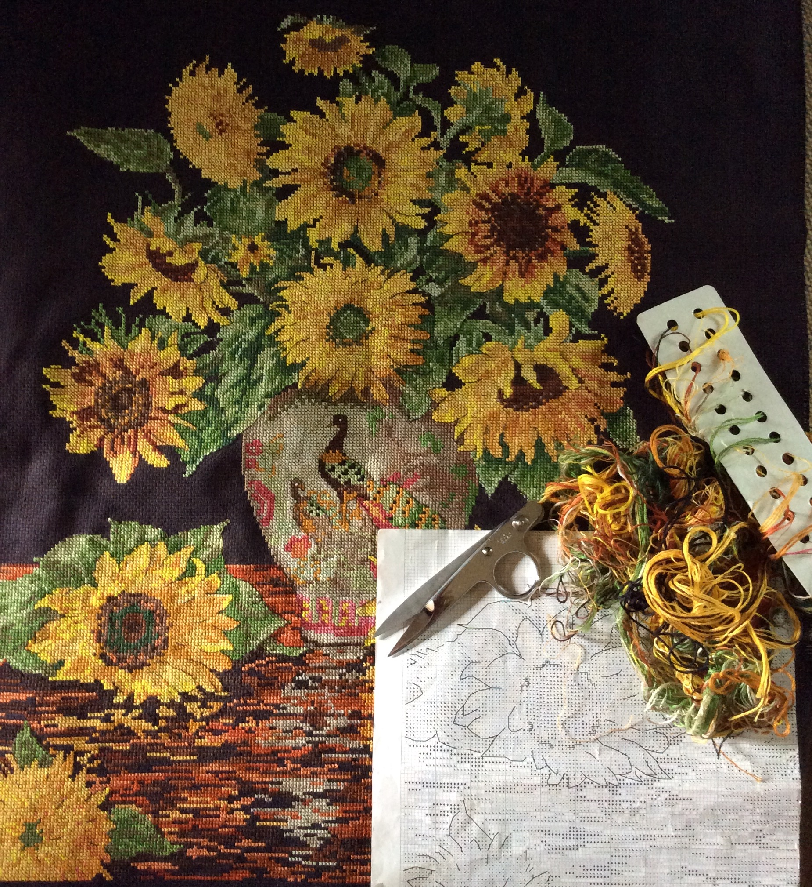

Karen High's Week at Healing Hearts Camp
Link Here to read more about Healing Hearts Camps


This is the project for my course in Web Design. I took a study break to help my friends Melissa and Scott with their Healing Hearts Camp. Here are a few highlights!
Adventures with Crafts

So I am not a particularly crafty person but guess who got put in charge of helping
20 challenging children complete three craft projects last week! Yep, that was me!
My favorite craft is counted-cross stitch which involves precise little squares and a coded pattern.
OK, so my thread gets a bit messy but you can see I Like Precision!
At least we didn't even try to start until Wednesday and the first project involved nothing scarier than a spray bottle of water in making coffee filter flowers.
We had a nature walk prior to crafts on Thursday so the children could collect decorations for a frame, so after the walk, the glue guns came out - Yikes! I had all the flowers "petals" sorted and ready for them to assemble into flowers in the dining hall prior to the nature walk, so the craft cabin was all ready for frame decorating, and so was I? My great craft helpers Fawn, Megan, and Naomi manned the glue guns while I kept a semblance of order in matching child with materials, since, of course, we also threw in preliminary painting of Mommy crowns with glitter glue!
It may have occurred to you that having 20 challenging children in a craft room is INSANE! Actually, only half were in the room at a time usually as the rest were in the care of Roland and Joe, with help from Naomi and Megan, playing games or working on the camp song with Ansley and Fawn. Somehow we all managed to give them a sense that we knew what we were doing and could keep them safe! Fake it until you make it - that's the goal!
So Friday came and was much like Thursday with another nature walk to gather decorations for crowns. Wooden cubes for each family had family pictures from the previous days of camp glued on them, crowns were decorated, the glue guns started failing and popping the circuit breaker. But the final results, presented to the parents in the Saturday coronation, were beautiful, especially coming from children who would usually rather destroy than create for their parent. Tears flowed and parents were grateful - totally worth every minute!